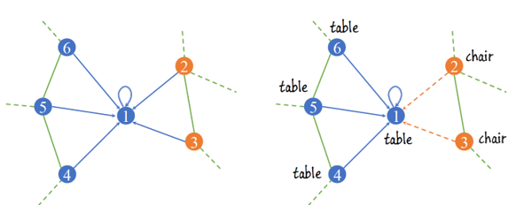
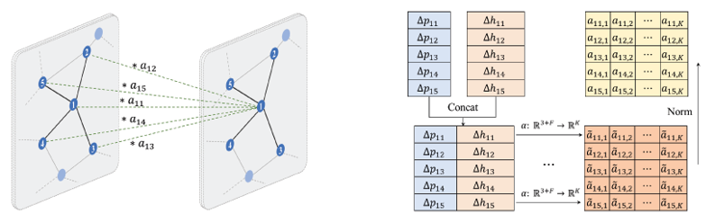
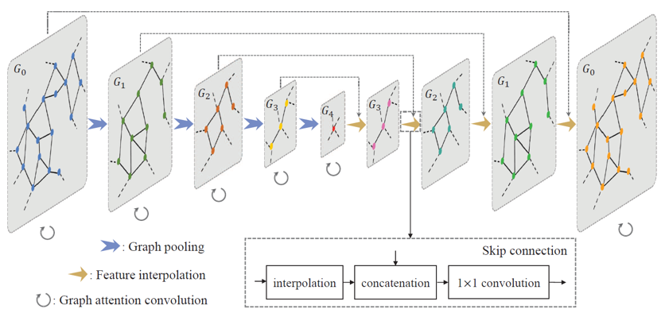
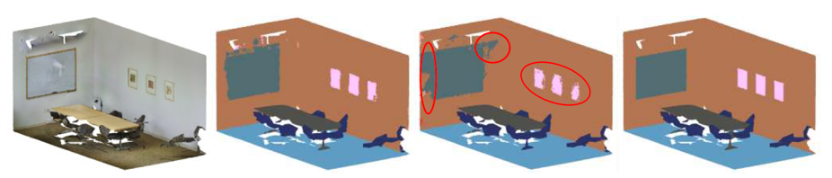
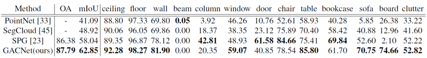
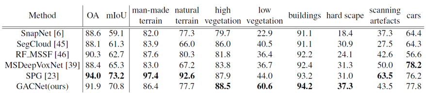
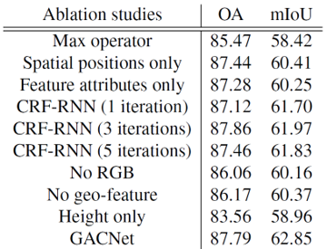
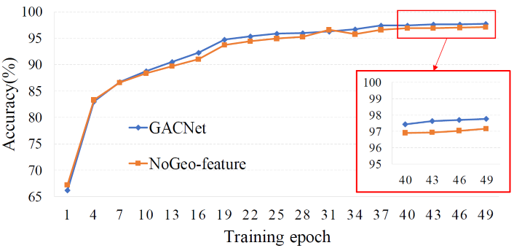
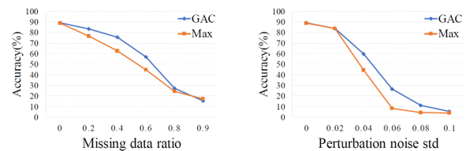

Graph Attention Convolution for Point Cloud Semantic Segmentation 리뷰
오늘 소개드릴 논문은 Stanford에서 2019년 CVPR에서 발표한 Graph attention convolution for point cloud semantic segmentation 논문에 대한 리뷰입니다.
이 논문은 graph attention convolution 연산을 제안하였는데, 이는 graph convolution kernel에 이웃한 점들과의 연관성에 따라 attention을 가하여 연관성이 높은 점들에 focus된 feature vector를 추출해줄 수 있도록 설계했습니다. 이를 통해 feature contamination을 방지하고 구조적 feature을 잘 추출하여 높은 segmentation 성능을 달성했습니다.  3D Point cloud의 semantic segmentation 분야는 PointNet 논문을 기점으로 활발하게 연구되고 있습니다. 최근에는 point cloud를 graph 형태로 표현하여 CNN 기반의 네트워크를 통해 segmentation 하려는 시도들이 많이 있습니다. 하지만 일반적인 graph convolution 연산에 이용하는 convolution kernel은 일정한 값으로 고정되어 있고, 이는 보통 주변 점들의 feature vector를 homogeneous하게 더하여 새로운 feature로 변환해줍니다. 예를 들어, 위의 그림에서 1번 점에 대한 graph convolution output은 1~5번 점들의 feature를 정해진 비율로 더해서 얻게 되고, 이는 1번 점의 클래스와 주변 점들의 클래스(table 또는 chair)를 고려하지 않고 얻은 것이기 때문에 좋은 output feature vector가 아닙니다. 이는 이웃한 점들과의 구조적인 연결 관계를 파악하게 어렵게 만들기 때문에 결과적으로 명확하지 않은 경계선을 만들거나 부분적으로 잘못된 segmentation 영역을 생성하는 등의 문제를 야기합니다.
이러한 standard convolution kernel의 단점을 해결하기 위해 제안된 것이 graph attention convolution입니다. Graph attention convolution은 convolution 연산이 가해지는 점과 그 주변 점들의 공간적/특징적 정보들을 이용하여 attention weight을 계산하는데, 이는 연관성이 떨어지는 점들이 output feature vector에 관여하는 것을 막아줍니다. 이를 통해 point cloud에 적용하는 convolution kernel의 실질적인 receptive field는 해당하는 점과 주변 점들의 특징에 의해 동적으로 변화하게 됩니다.
논문에서는 앞서 제안한 graph attention convolution과 graph coarsening 및 graph interpolation 기법을 통해서 graph pyramid network 구조를 구현하였습니다. 그렇다면 graph attention convolution(GAC)부터 GACnet까지 차근차근 살펴보겠습니다.
Graph Attention Convolution
 Point cloud는 각 점들을 vertex로 하고 인접한 점들을 연결한 선은 edge로 하는 graph 형태의 구조로 변환할 수 있습니다. 이 때 각 점은 f 차원의 feature vector를 가질 수 있습니다. Graph attention convolution 연산은 우선 기존 f 차원의 input feature vector를 k 차원의 output feature vector로 변환하는 것으로 시작합니다. 이 변환은 미분 가능한 형태의 어떠한 함수로도 진행할 수 있는데, 논문에서는 multi-layer perceptron을 이용했습니다.
이제 각 output feature vector에 attention weight을 elementwise하게 곱해서 convolution 연산을 수행할 것입니다. Attention weight은 output feature vector과 같은 k 차원의 벡터여야 합니다. GAC에서는 점들 간의 좌표 차이와 feature vector 차이를 이용해서 attention weight을 추출하였습니다. 따라서 attention weight을 계산하는 함수는 xyz 좌표의 3차원에 input feature vector의 k 차원을 더한 (3+k) 차원의 input을 받아서 output feature vector의 k 차원의 output을 도출합니다. Sharing attention mechanism이라고 부르는 위 변환도 마찬가지로 미분가능한 어떠한 함수로도 진행할 수 있으며 논문에서는 multi-layer perceptron을 이용했습니다.
Attention weight은 output feature 값의 안정성을 위해 exponential normalization 과정을 거치게 됩니다. 이제 위에서 얻은 k 차원의 output feature vector에 attention weight을 element-wise 곱한 후 학습가능한 bias 값을 더하여서 GAC의 최종 output vector를 얻습니다.
GAC 연산은 일반적인 graph attention mechanism과 다르게 attention weight을 얻을 때 점들의 위치 정보와 특징 정보의 차이를 동시에 이용한다는 특징이 있습니다. 이를 통해 점들 사이의 위치적 관계를 고려한 attention 값을 얻을 수 있고, 비슷한 특징을 가진 점들에 더 큰 attention을 가할 수도 있습니다. 또한 feature의 channel별로 attention을 가했기 때문에, 이상적으로 channel-wise independent한 feature vector의 특징을 더 잘 살릴 수 있습니다.
GACnet
 Feature pyramid network(FPN) 기반의 구조는 image segmentation 또는 object detection 분야에서 흔하게 이용되는 유용한 구조입니다. 논문에서는 이 구조를 차용한 graph pyramid network 형태의 구조를 위의 그림과 같이 구현하였습니다. FPN에서 feature extraction를 위해 활용되었던 convolution layer는 graph attention convolution layer가 수행합니다. 앞서 설명드린 것처럼 GAC layer는 점들의 위치 및 특징 정보를 활용하여 graph의 local feature vector를 잘 추출해낼 수 있습니다.
이렇게 얻은 local feature vector는 graph coarsening 및 pooling 과정을 통해 하나의 feature vector로 통합되었습니다. Graph coarsening은 PointNet++에서 소개된 방법을 그대로 이용했는데, furthest point sampling algorithm을 적용하여 여러 개의 중심점들을 선정하고, 각 중심점 주위의 점들을 grouping해서 중심점 단위의 group으로 모아주었습니다. 이후 각 중심점 group마다 max 또는 mean pooling을 적용하여 하나의 feature vector를 도출하였습니다.
Graph pooling을 거치면 graph의 resolution이 작아지게 되는데, segmentation 등의 task에서는 원래 점들과 같은 개수의 feature map을 output으로 얻어야 하기 때문에 작아진 graph를 interpolation을 통해 up-sampling해주는 과정이 필수적입니다. 이를 feature interpolation layer이라고 부르는데, 마찬가지로 PointNet++에서 제안된 spatial distance 기반의 interpolation 방법을 적용하였습니다. (PointNet++ 리뷰를 참고하시면 도움이 됩니다!) GAC 및 graph pooling layer를 통해 학습된 feature vector는 feature interpolation layer를 통해 서서히 finest scale로 복원됩니다. 논문에서는 더 풍부한 semantic feature를 추출하기 위해 interpolation의 각 단계에서 skip-connection을 통해 down-sampling 되기 전의 feature vector와 합쳐주었습니다. 또한 feature refinement를 위해 최종적으로 학습된 feature vector를 GAC layer에 통과해주었습니다.
Initial feature vector는 점의 높이, RGB, geo-feature로 구성했습니다. Geo-feature란 finest scale graph에서 이웃한 점들에 대한 covariance matrix의 eigenvalue 값으로 정의하였습니다. 각 구성 특징들의 역할은 후에 ablation study에서 다시 설명드리겠습니다. 초기 그래프는 각 점에 대해 특정 반지름 내에 존재하는 점들 중 random하게 K 개의 점을 sampling하여 연결하여 생성하였습니다. 이 때 kNN이 아니라 random sampling을 통해서 edge를 구성한 이유는 point cloud의 density가 달라지더라도 이와 무관하게 일정한 범위의 점들에 대해 sampling 할 수 있기 때문입니다. 이렇게 되면 이웃한 두 점이 항상 쌍방으로 연결되지는 않게 되고, graph는 방향성이 있는 edge를 가진 directed graph의 형태가 됩니다.
GAC and Conditional Random Field(CRF)
Image segmentation 분야의 유명한 네트워크 모델인 DeepLab에서는 명확한 경계선 구분을 위해 conditional random field(CRF) algoritm을 이용한 후처리 방법을 제안하였습니다. 이는 IOU 및 결과물에 대한 artifact reduction에 많은 공헌을 했고 이후에 이를 기준삼아 많은 segmentation 연구에서 CNN의 output에 CRF를 적용했습니다. CRF는 좌표 및 RGB 값이 비슷한 점들을 같은 label로 일치시켜 segmentation 경계선을 깔끔하고 detail하게 만들어주었습니다.
앞서 설명드린 GAC도 CRF와 마찬가지로 위치 및 특징 정보를 활용하여 feature vector를 추출해주는 역할을 합니다. 특히 input feature vector 간의 차이를 이용하여 attention weight을 계산하기 때문에 비슷한 input feature를 가지는 점들에 대해 일관적인 output feature를 도출합니다. 이는 CRF와 정확히 같은 특징을 공유하기 때문에 GACnet에서는 더 이상 CRF 과정을 거치지 않아도 됩니다. 실제로 CRF model을 RNN 형식으로 구현하여 후처리하는 방법은 CNN과 독립적으로 진행되기 때문에 end-to-end로 결과를 얻을 수 없게 되는 등의 번거로움이 발생합니다. 또한 input feature의 유사도를 기반으로 layer를 거칠 때마다 더 semantic한 feature vector를 추출할 수 있기 때문에 segmentation 성능도 훨씬 더 잘나오게 되는 것 같습니다.
Evaluation
논문에서는 GAC 및 GACnet을 검증하기 위해 S3DIS와 Semantic3D라는 두 가지 3D semantic segmentation benchmark를 이용했습니다. GACnet의 성능은 IOU 및 overall accuracy를 이용하여 평가했습니다.
- S3DIS

S3DIS는 6개의 실내 공간에 대한 3D RGB point cloud dataset입니다. 각 점은 13개 카테고리로 labeling 되어 있습니다. 논문에서는 6개의 공간 중 5번 공간을 testing set으로, 나머지 공간을 training set으로 하여 네트워크를 학습 및 평가하였습니다. 이렇게 이전에 전혀 보지 못한 공간에 대해 test하게 되면 task가 어려워지기 때문에 초기에는 성능이 잘 안나올 수 있지만, 네트워크 모델이 잘 일반화 되었는지를 평가하기에 좋습니다. 각 공간을 방 별로 먼저 분리하고, 각 방을 1.2m x 1.2m 의 블럭으로 분리하여, 각 블럭 별로 random sampling된 4096 개의 점을 하나의 dataset으로 이용하였습니다. 방은 분리하는 과정에서 가장자리 0.1m 씩은 물체의 일부밖에 보이지 않을 수 있기 때문에 buffer area로 설정하여 학습 및 loss 계산에 포함하지 않았습니다.

결과는 위와 같습니다. GACnet은 대부분의 클래스에서 SOTA의 성능을 보여주었습니다. 특히나 GACnet은 S3DIS dataset에서 검출하기 어려운 벽 위의 창문이나 보드와 같은 클래스들도 잘 검출하였는데, 이는 GAC가 공간 정보 뿐만 아니라 RGB 값을 포함한 특징 정보도 활용하기 때문에 공간적 구조가 명확하지 않더라도 구별을 잘 해낸 것으로 생각합니다.
- Semantic3D
Semantic3D는 LiDAR에서 얻은 약 40억개 이상의 점들로 구성된 3D point cloud dataset입니다. 점들에 대한 feature는 RGB와 intensity 값으로 구성되어 있고, 각 점은 8개의 카테고리 중 하나로 labeling 되어있습니다. 또한 Semantic3D는 외부 풍경에 대한 dataset이기 때문에 일반적으로 물체의 크기가 큽니다. 따라서 논문에서는 공간을 4m x 4m의 블럭으로 구분하였고, 블럭 별로 4096 개의 점을 sampling하여 하나의 dataset으로 이용하였습니다.

GACnet은 Semantic3D dataset에서도 SOTA의 성능을 보여주었습니다. 특히 Semantic3D에서는 차나 건물 등의 물체들이 가려져 있는 경우가 많은데, GACnet은 구조적인 feature learning 덕분인지 가려져 있는 물체에 대해서도 좋은 성능을 보여주었습니다.
Ablation Study
GAC 및 GACnet을 자세히 분석/검증하기 위해 논문에서는 몇 가지 항목에 대한 ablation study를 진행했습니다. 
- GAC 연산의 효율성
우선 GAC 연산의 효율성을 검증하기 위해 저자는 GACnet의 GAC 부분을 PointNet에서 활용한 max pooling layer로 치환해서 성능을 측정하고 비교했습니다. Max-pooling 함수는 특징을 통합하여 분류하는 object classification 성능은 좋았지만, 정교한 경계선 설정이 중요한 segmentation task에서는 local한 정보들을 많이 소실하여 비교적 성능이 좋지 못했습니다. 반면에 GAC는 두 task 모두 뛰어난 성능을 보여주었습니다.
- 위치 및 특징 정보들의 성능 향상 기여
GAC에서 attention weight은 위치 좌표 값의 차이와 feature vector 간의 차이를 input으로 계산하였습니다. 저자는 각각을 하나씩 제거하여 얻은 attention weight을 이용하여 성능을 측정해보았는데, 두 경우 모두 성능 하락이 발생했습니다. 특히 점의 높이, RGB, geo-feature 등으로 구성된 feature vector를 제거하였을 때, 명확한 경계선 설정에 어려움을 겪었다고 이야기합니다.
- CRF-RNN 과의 비교
GAC 모듈을 CRF-RNN으로 치환했을 때의 성능도 비교하였습니다. 두 경우 모두 유사한 성능을 보여주었는데, CRF와 GAC가 특징 벡터의 유사도를 이용하여 label을 도출하는 근본적으로 같은 성질을 공유하기 때문으로 보입니다.
- 초기 feature vector 구성에 따른 효과
GAC의 input으로 활용하는 초기 feature vector는 점의 높이, RGB, geo-feature로 구성하였습니다. 각각 성능에 어떤 영향을 주는지를 분석하기 위해, 특정 component를 제외하고 성능을 측정하였습니다. 결과는 전반적인 성능 하락이 발생하여 각 component가 성능에 주요한 역할을 하는 것을 할 수 있었습니다.  이 중 흥미로운 결과가 있었는데, geo-feature가 training accuracy에는 별다른 영향을 주지 않았는데 test accuracy에는 비교적 큰 성능 향상에 기여했습니다. 이는 covariance matrix의 eigenvalue로부터 추출한 geo-feature 값이 전반적인 low-level feature에 대한 정보를 포함하고 있고, 결과적으로 네트워크의 일반화에 기여한 것으로 보입니다.
- 데이터 소실 및 잡음에 대한 강도 실험  마지막으로 데이터의 일부가 소실되거나 Gaussian noise가 추가되었을 때 classification 성능이 어떻게 변화하는지를 실험하였습니다. GAC 모듈을 max-pooling 함수로 치환하여 비교하였는데, 두 경우 모두 GACnet이 훨씬 더 robust한 결과를 보여주었습니다. 아마 max-pooling 함수를 이용하게 되면, noise 값이 크게 튀는 경우에 이를 대표적인 feature 값으로 인식되어 classification 정확도를 낮추지 않았을까 생각됩니다. 반면에 GAC는 상대적 위치정보 뿐만아니라 여러 성분들(RGB 등)로 구성된 특징 정보를 활용하기 때문에 (정보량이 많기 때문에), 방해 요소들이 있어도 robust한 결과를 보여주는 것 같습니다.
Summary
Graph attention convolution은 주변 점들에 따라 attention weight을 다르게 가하는 방식을 통해 dynamic한 receptive field를 가지는 convolution kernel를 생성할 수 있었고, 이를 통해 feature vector를 추출했습니다. Edge convolution 등의 방법과 유사하면서도, 점들의 특징 벡터의 차이를 이용하여 비슷한 label을 가진 점들을 확실하게 일치시켜 주는 (CRF가 기존에 해주던 방식의) 연산 방식이 SOTA의 성능을 만들 수 있지 않았나 생각이 듭니다. 긴 글 읽어주셔서 감사합니다 :)
참고 문헌 및 출처